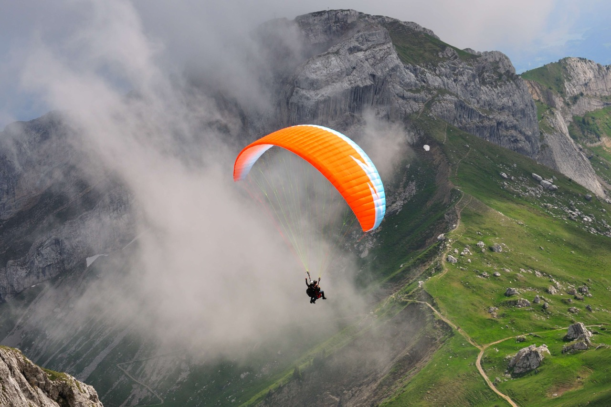
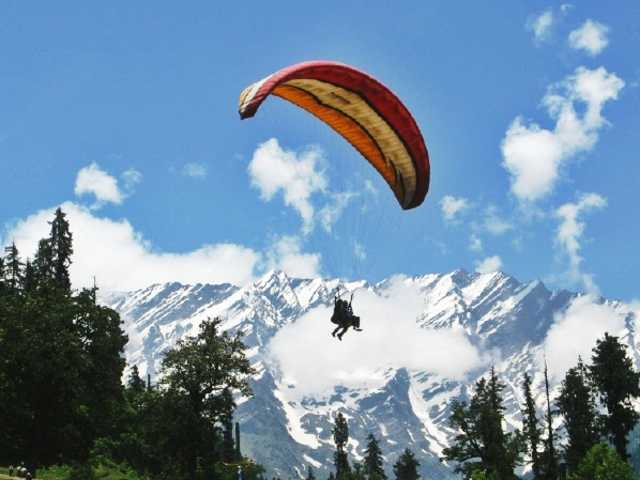

- Bir Billing:Best Paragliding Site in Asia

Set in the backdrop of the beautiful Himachal Pradesh, the little village of Bir is practically the Paragliding Capital of India. The beautiful mountains, the greenery, the weather, everything is just so perfect. And paragliding adds a dash of adventure to the tranquil atmosphere. It is a perfect place for adventure junkies as well as country lovers. Bir is the take-off site and Billing, which is located at a distance of about 14 km from it, is the landing site. The nearest airport is Dharamshala, located at a distance of about 70 km from Bir. The Paragliding world cup took place for the first time in India at Bir-Billing in the year 2015. The place is equally famous for its amazing paragliding experiences both inside the country as well as with the foreigners. The place has one of the best take off and landing sites combined with the suitable air currents plus the ideal cloud base.
How to reach
From Delhi to Bir via buses (Volvo or Tata) or flights to the nearest airport at Dharamshala
Best Time to Visit
The best time to visit is between October and mid-June when there is no rains and weather is pleasant.
Popular Operators
Camp Oak View, Friends adventures, and tours, Blue Umbrella
Approximate Cost
INR 3500- INR 5500 (approx)
- Manali,Himachal Pardesh

One of the major tourist attractions of Himachal Pradesh, Manali is a beautiful valley located in the heart of the Himalayas. The town is located at an altitude of about 5500 ft to 6000 ft above the sea level which makes it ideal for paragliding trips. The scenic beauty is further aggravated by the thrill factor of paragliding in the area. The areas of Solang Valley, Fatru Mountain, Gulaba, and Nagger Road are the places where paragliding takes place. Apart from the monsoon season, during which paragliding is banned, one can practically enjoy the feel of the air from up above practically for the rest of the year. It is an ideal getaway for someone who loves adventure as much as the beautiful locales.
How to reach you can go there by air, the nearest airport being at Bhuntar, a mere 50 km away or you can go there via buses which run periodically; then there is the option of a train. Or if you are a little too adventure minded, you can go on a bike ride.
Best Time to Visit
Between October and May. And as told earlier, paragliding is banned during monsoons.
Popular Operators
Ski Himalayas, TigerEye Adventures, Himalayan Extreme Centre
Approximate Cost
Starting from INR 1800 and above